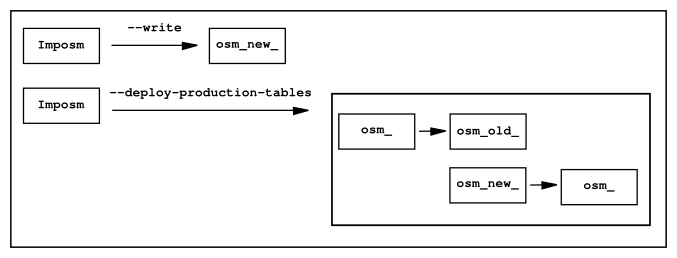

Note
Autores:
Licencia:
Excepto donde quede reflejado de otra manera, la presente documentación se halla bajo licencia Creative Commons Reconocimiento Compartir Igual
Se trata de una serie de scripts hechos en Python que permiten importar datos de Openstreetmaps a una base de datos Postgres. Los archivos a importar deben estar en el formato XML de OSM y la base de datos debe tener la extensión espacial PostGIS.
Su espiritu es optimizar la creación de bases de datos geográficas enfocadas a renderizar o a montar servicios WMS.
Los desarrolladores principales son Omniscale, que es la empresa de Dominik Helle y Oliver Tonnhofer, que también están detrás del proyecto MapProxy.
Funciona en Linux y Mac OS X y es código libre bajo licencia Apache Software License 2.0.
No permite el uso de actualizaciones diferenciales
Solo permite el uso de bases de datos PostGIS, aunque podría implementarse con facilidad su uso con otras como SpatialLite, Oracle, etc.
Aunque es bastante eficiente con el uso de la memoria, las importaciones de datos masivas pueden llevar bastante tiempo: un archivo de 1 GB (comprimido, equivalente a Alemania) en un sistema con 2 GB RAM o Europa entera (~5 GB) en un sistema de 8 GB no darían problemas, pero un planet requerirá de unos 16 GB de RAM o más (tarda unas 20h con 8GB).
La instalación es súmamente sencilla ya que al estar incluída en el Python Package Index responde tanto a pip como a easy_install, solo hay que asegurarse de que se tienen instaladas las dependencias.
$ sudo pip install imposm
La documentación recomienda instalar la aplicación en un entorno virtual de Python, para aislarlo del restao del sistema y también recomienda instalar los Speedups de Shapely.
Todas las funcionalidades de Imposm se ejecutan a través de comandos en una consola de sistema.
El primer paso para la carga de datos es la creación de la base de datos que se hace utilizando el comando imposm-psqldb, este comando nos devuelve una estructura de datos para la base de datos PostGIS, lo mejor es asignar una salida directa del comando a un archivo de texto.
$ imposm-psqldb > create-db.sh
Hay que editar el archivo create-db.sh ya que hay que cambiar la ruta a los scripts que instalan PostGIS en una base de datos Postgres y también la ruta al archivo pg_hba.conf.
Otra manera de hacerlo es tener configurada una template de PostGIS en el servidor y modificar el script para usarla en el comando de creación de la base de datos.
Para leer los datos ejecutamos el siguiente comando:
$ imposm --read datos20120321.osm
Este comando crea los archivos de cache en el directorio en el que se ejecuta.
Para trasladar la información de los archivos de cache a la base de datos se usa el comando:
$ imposm --write --database osm --host localhost --user osm
Esto crea las tablas (ojo que si ya existían las borra primero) tanto de los datos como de las generalizaciones y también crea las vistas.
Este paso es opcional, pero permite agrupar los datos, optimizar los índices y realiza un mantenimiento de la base de datos PostgreSQL.
$ imposm --optimize -d osm
En realidad pueden combinarse todos los pasos en un solo comando:
$ imposm --read --write --optimize -d osm datos20120321.osm
La importación de datos se hace sobre tablas a las que se le añade el prefijo osm_new_ en el nombre.
Para trabajar sobre las tablas se debería hacer un despliegue de las mismas, con ImpOSM basta con ejecutar el comando:
$ imposm -d osm --deploy-production-tables
Para que cambie el prefijo a osm_. Si ya hubieramos hecho otro despliegue las actuales tablas osm_ se renombran automáticamente a osm_old_. Cada vez que se hace un despliegue se borrarán primero las osm_old_.
Para revertir el despliegue se puede ejecutar el comando:
$ imposm -d osm --recover-production-tables
Y para borrar las tablas con prefijo.
$ imposm -d osm --remove-backup-tables
El esquema de base de datos por defecto que utiliza ImpOSM viene de los elementos y etiquetas más comunes de OSM. Este esquema permite trasladar los datos empleando el paquete imposm.mapping y las estructuras definidas en el archivo:
/usr/local/lib/python2.7/dist-packages/imposm/defaultmapping.py
Hay definidas tres clases de Python para las geometrías base: Points, LineStrings y Polygons y todas las tablas tienen que ser instancias de una de ellas. Las tres clases usan los mimsmos argumentos:
El argumento Mapping debe ser un diccionario (un diccionario de Python) en la que las claves de OSM (p.e. highway, leisure, amenity, etc.) son las claves del diccionario y los valores de OSM (p.e. motorway, trunk, primary, etc.) los valores de las claves del diccionario.
Para una tabla de paradas de autobús, de tranvía y de ferrocarril el mapping debería ser parecido a este:
mapping = {
'highway': (
'bus_stop',
),
'railway': (
'station',
'halt',
'tram_stop',
)
}
El argumento fields debe ser una lista (o una tupla) con el nombre de la columna y su tipo de dato. Se emplea para añadir información adicional a la tabla. ImpOSM tiene clases para los tipos de datos más comunes que son las responsables de hacer sustituciones como 1, yes y true a TRUE en caso de datos booleanos por lo que se recomienda su uso:
fields = (
('tunnel', Bool()),
('bridge', Bool()),
('oneway', Direction()),
('ref', String()),
('z_order', WayZOrder()),
)
En el ejemplo la línea ('tunnel', Bool()) convertirá los valores de la clave tunnel a valores booleanos.
towers = Points(
name = 'towers',
mapping = {
'man_made': (
'tower',
'water_tower',
)
}
fields = (
('height', Integer()),
)
)